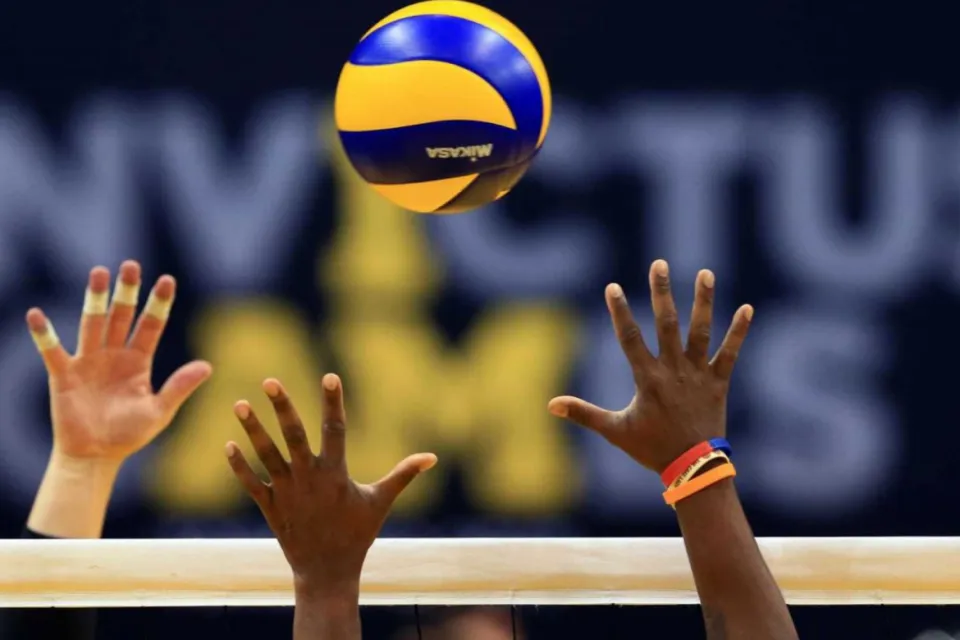
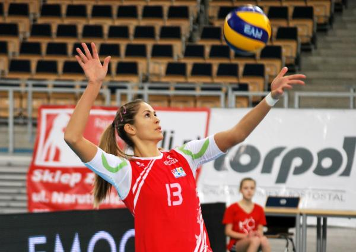
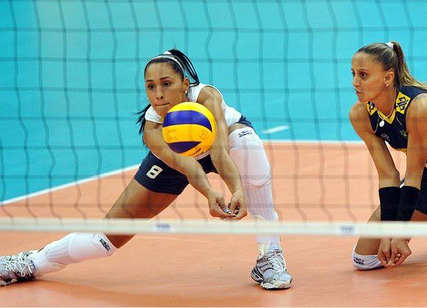

Voleibol (chamado frequentemente no Brasil de Vôlei e em Portugal de Vólei) é um desporto praticado numa quadra dividida em duas partes por uma rede, possuindo duas equipes de seis jogadores em cada lado. O objetivo da modalidade é fazer a bola passar sobre a rede de modo a que a bola toque no chão dentro da quadra adversária, ao mesmo tempo que se evita que os adversários consigam fazer o mesmo. O voleibol é um desporto olímpico, regulado pela Fédération Internationale de Volleyball (FIVB). Índice
O vôlei foi criado em 9 de fevereiro de 1895 por William George Morgan nos Estados Unidos.[1] O objetivo de Morgan, que trabalhava na "Associação Cristã de Moços" (ACM), era criar um esporte de equipes sem contato físico entre os adversários, de modo a minimizar os riscos de lesões. Inicialmente jogava-se com uma câmara de ar da bola de basquetebol e foi chamado Mintonette, mas rapidamente ganhou popularidade com o nome de volleyball. O criador do voleibol faleceu em 27 de dezembro de 1942 aos 72 anos de idade.
O voleibol de praia, uma modalidade derivada do voleibol surgida na década de 1920, tem obtido grande sucesso em diversos países, nomeadamente no Brasil e nos Estados Unidos.
Retirado de Wikipedia



| Posição | Time | Partidas jogadas | Vitórias | Derrotas | Placar | Pontos |
|---|---|---|---|---|---|---|
| 1 | Sesi-SP | 22 | 20 | 2 | 61:18 | 56 |
| 2 | Sada Cruzeiro | 22 | 19 | 3 | 59:22 | 54 |
| 3 | Taubaté Funvic | 22 | 17 | 5 | 54:26 | 47 |
| 4 | Rio de Janeiro VC | 22 | 13 | 9 | 51:38 | 39 |
| 5 | Minas | 22 | 13 | 9 | 48:39 | 39 |